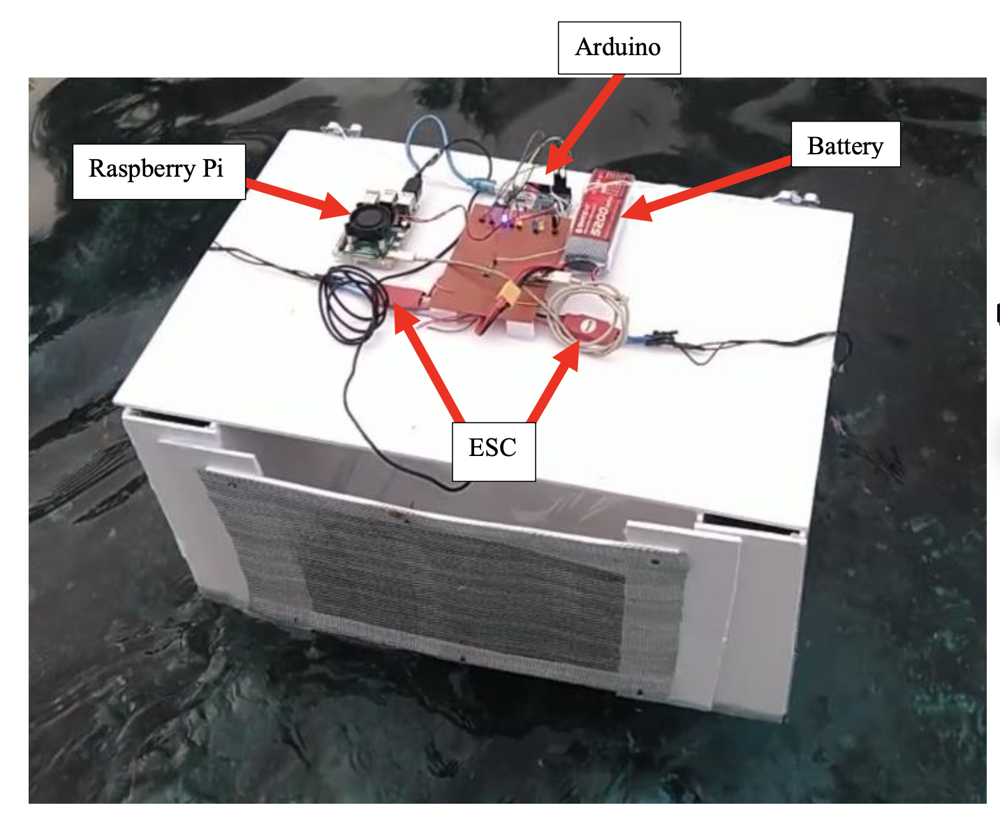

Bottle detection
A camera feed is processed on Raspberry Pi with a trained Haar cascade in OpenCV. The software identifies a bottle in the image and selects a direction.
CAPSTONE PROJECT / THAPAR INSTITUTE / 2021
Our team built a floating prototype that detects plastic bottles with a Raspberry Pi camera, steers with an Arduino-controlled twin-motor system, and collects waste through an open-front hull.

01 / DEVELOPMENT TIMELINE
An earlier version of this same waste-collection project won first place at Hacksagon 2020. The documented capstone phase ran from July to December 2021 at Thapar Institute of Engineering and Technology, with Pushpak Rooprao and Mrinal Jain as my teammates. The 2021 work developed the physical boat, electronics, bottle detector and control logic into an integrated prototype.
02 / SYSTEM ARCHITECTURE
A camera feed is processed on Raspberry Pi with a trained Haar cascade in OpenCV. The software identifies a bottle in the image and selects a direction.
The Pi sends directions over serial communication. An Arduino Uno drives two brushless motors through electronic speed controllers to turn or move forward.
Two forward ultrasonic sensors trigger a turn when an obstacle is within the one-metre threshold used in the project. A low-battery condition stops the motors.
The front opening guides floating waste into the hull as the boat advances. This avoids a separate conveyor or robot arm in the prototype.
03 / PHYSICAL TEST
A recording of the physical prototype during the capstone testing phase.
04 / RESULTS & LIMITS
The capstone report documents bottle detections, Pi-to-Arduino communication, obstacle avoidance and a pool test of the collection mechanism. The detector performed best against less detailed backgrounds. Limited training examples also produced false detections, making a larger dataset and lower-latency vision hardware clear next steps.